Here are 69 questions from the AWS Cloud Architecting Knowledge check that I find worth noting.
1
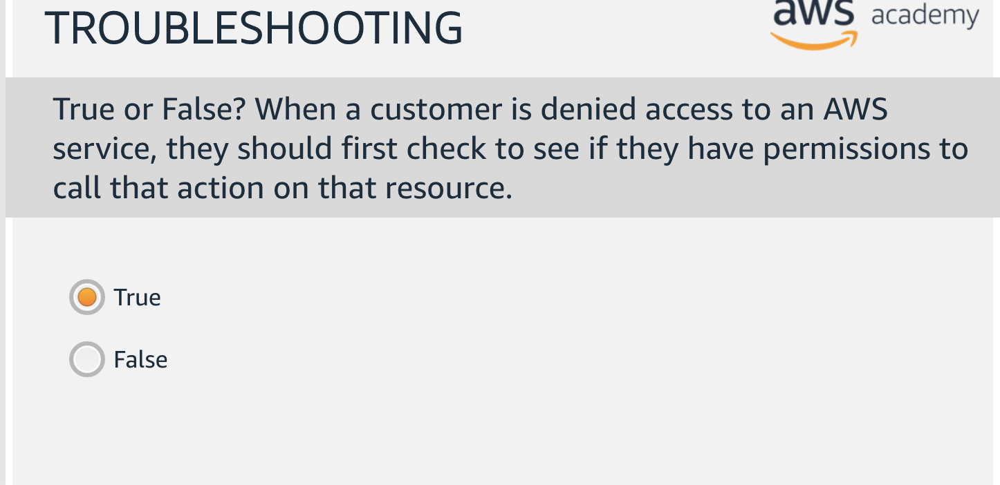
2
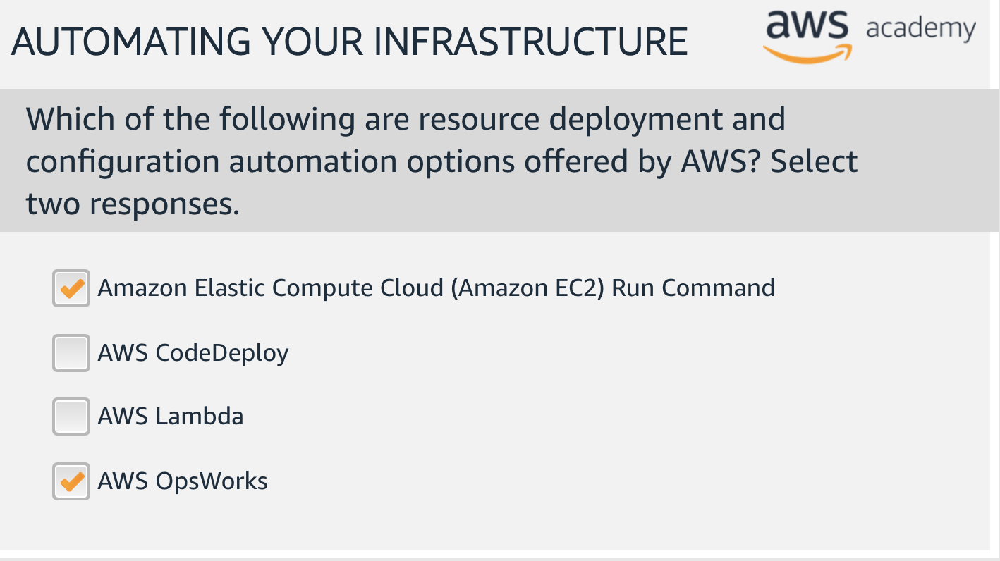
Resource deployment and configuration automation
Amazon EC2 Run Command
AWS Systems Manager Run Command lets you remotely and securely manage the configuration of your managed instances. A managed instance is any EC2 instance or on-premises machine in your hybrid environment that has been configured for Systems Manager.
Run Command enables you to automate common administrative tasks and perform ad hoc configuration changes at scale.
AWS Systems Manager
AWS Systems Manager gives you visibility and control of your infrastructure on AWS. Systems Manager provides a unified user interface so you can view operational data from multiple AWS services and allows you to automate operational tasks across your AWS resources.
Systems Manager simplifies resource and application management, shortens the time to detect and resolve operational problems, and makes it easy to operate and manage your infrastructure securely at scale.
AWS OpsWorks
AWS OpsWorks is a configuration management service that provides managed instances of Chef and Puppet. Chef and Puppet are automation platforms that allow you to use code to automate the configurations of your servers. OpsWorks lets you use Chef and Puppet to automate how servers are configured, deployed, and managed across your Amazon EC2 instances or on-premises compute environments.
3
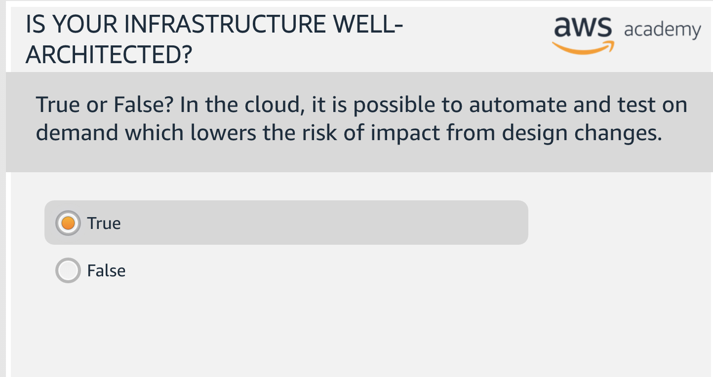
4
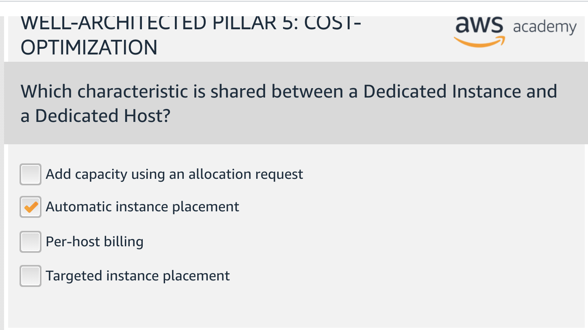
Dedicated Host
To use a Dedicated Host, you first allocate hosts for use in your account. You then launch instances onto the hosts by specifying host tenancy for the instance. You must select a specific host for the instance to launch on to, or you can allow it to launch on to any host that has auto-placement enabled and matches its instance type.
If you no longer need an On-Demand host, you can stop the instances running on the host, direct them to launch on a different host, and then release the host.
Dedicated Hosts are also integrated with AWS License Manager. With License Manager, you can create a host resource group, which is a collection of Dedicated Hosts that are managed as a single entity.
Auto-Placement
Auto-placement is configured at the host level. It allows you to manage whether instances that you launch are launched onto a specific host, or onto any available host that has matching configurations.
When the auto-placement of a Dedicated Host is disabled, it only accepts Host tenancy instance launches that specify its unique host ID. This is the default setting for new Dedicated Hosts.
Host affinity
Host affinity is configured at the instance level. It establishes a launch relationship between an instance and a Dedicated Host.
When affinity is set to Host, an instance launched onto a specific host always restarts on the same host if stopped. This applies to both targeted and untargeted launches.
When affinity is set to Off, and you stop and restart the instance, it can be restarted on any available host. However, it tries to launch back onto the last Dedicated Host on which it ran (on a best-effort basis).
Dedicated Instance
Dedicated Instances are Amazon EC2 instances that run in a virtual private cloud (VPC) on hardware that’s dedicated to a single customer. Dedicated Instances that belong to different AWS accounts are physically isolated at a hardware level, even if those accounts are linked to a single payer account. However, Dedicated Instances may share hardware with other instances from the same AWS account that are not Dedicated Instances.
You can change the tenancy of an instance from dedicated(Dedicated Instance) to host(Dedicated Host), or from host to dedicated after you’ve launched it.
If you launch an instance into a VPC that has an instance tenancy of dedicated, your instance is automatically a Dedicated Instance, regardless of the tenancy of the instance.
A Comparison of Dedicated Host vs Dedicated Instance
The chart is found here.
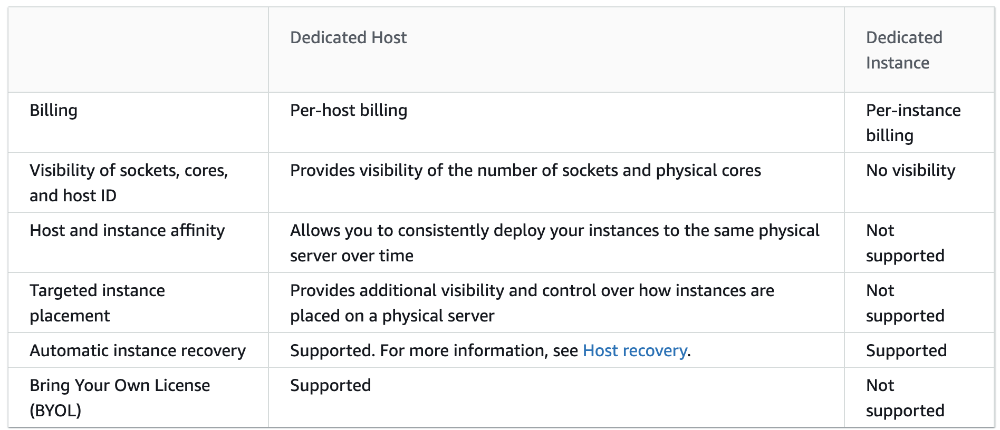
4
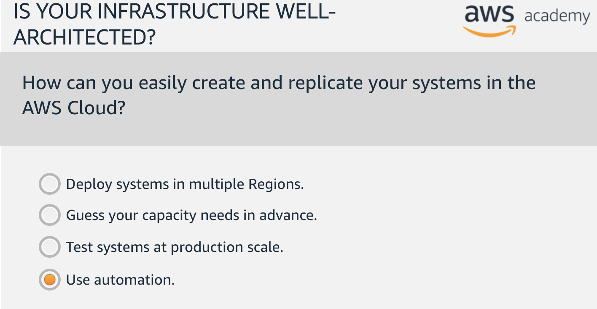
5
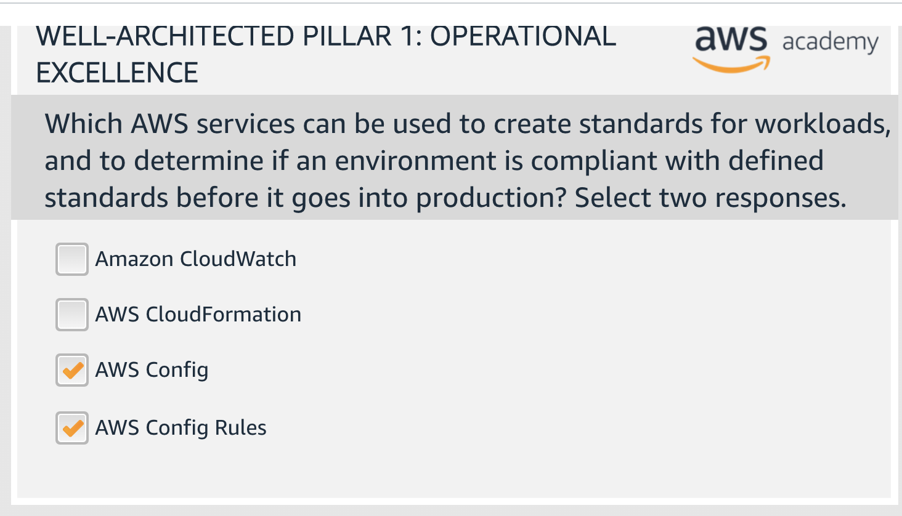
AWS Config
AWS Config is a service that enables you to assess, audit, and evaluate the configurations of your AWS resources. Config continuously monitors and records your AWS resource configurations and allows you to automate the evaluation of recorded configurations against desired configurations.
With Config, you can review changes in configurations and relationships between AWS resources, dive into detailed resource configuration histories, and determine your overall compliance against the configurations specified in your internal guidelines.
AWS Config Rule
An AWS Config rule represents an AWS Lambda function that you create for a custom rule or a predefined function for an AWS managed rule. The function evaluates configuration items to assess whether your AWS resources comply with your desired configurations.
This function can run when AWS Config detects a configuration change to an AWS resource and at a periodic frequency that you choose (for example, every 24 hours).
6
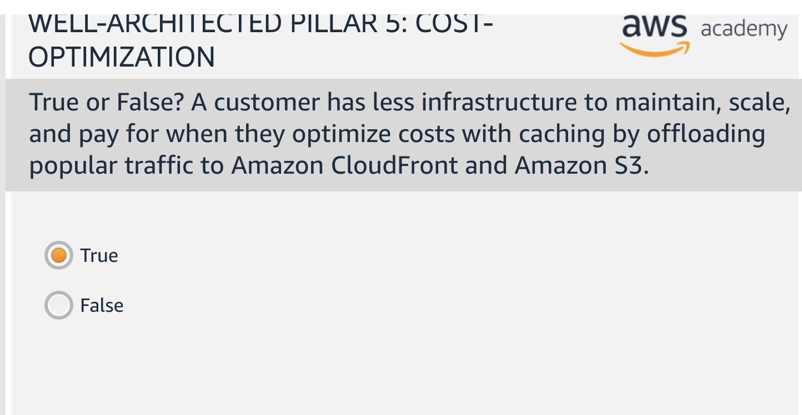
Offload popular traffic to fully managed services like CloudFront or S3 => Less IaaS to maintain, scale and pay for
7
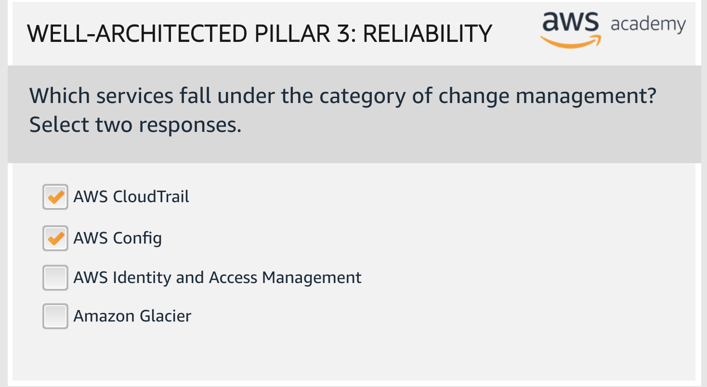
8
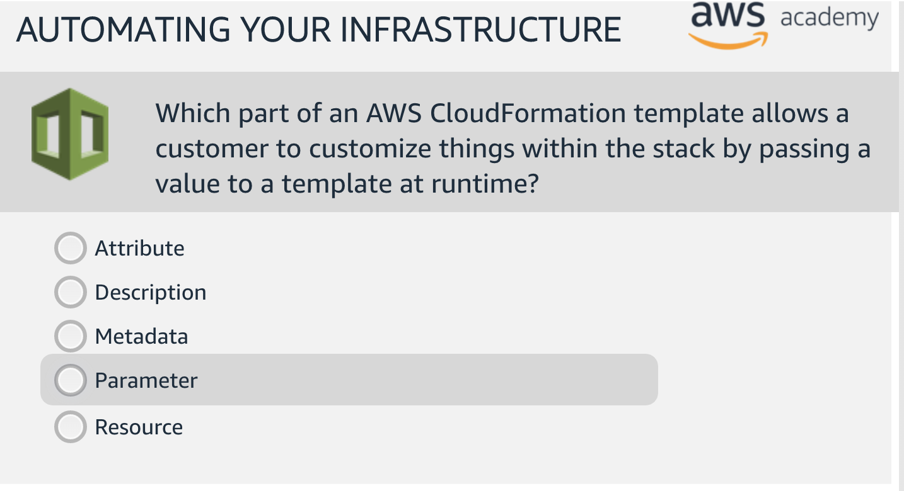
9
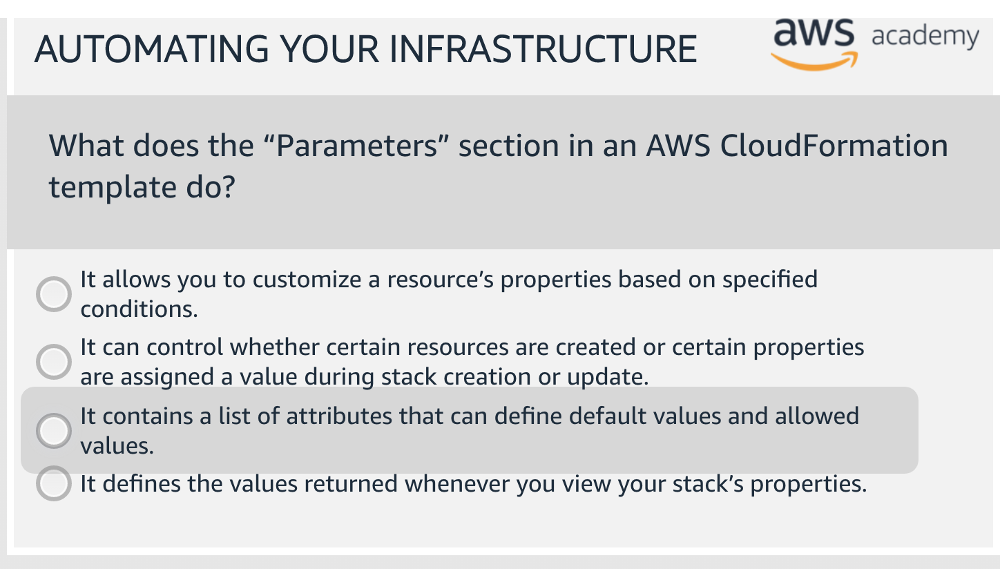
Parameters
AWS CloudFormation Parameters
You declare parameters in a template’s Parameters object. A parameter contains a list of attributes that define its value and constraints against its value. The only required attribute is Type, which can be String, Number, or an AWS-specific type. You can also add a Description attribute that tells a user more about what kind of value they should specify.
It contains a list of attributes that can define default values and allowed values.
10
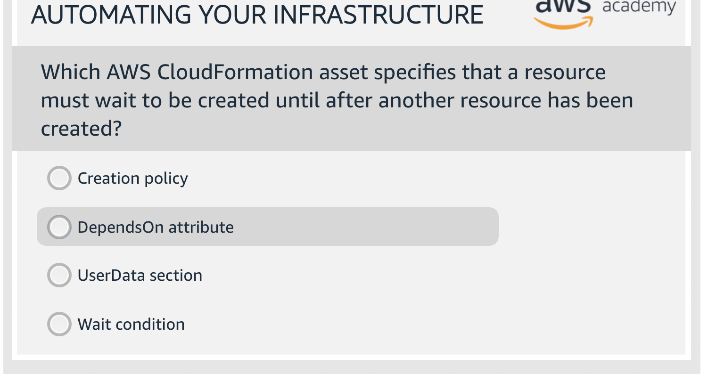
DependsOn Attribute
With DependsOn
attribute you specify that the creation of a specific resource follows another. When you add a DependsOn attribute to a resource, that resource is created only after the creation of the resource specified in the DependsOn attribute.
11
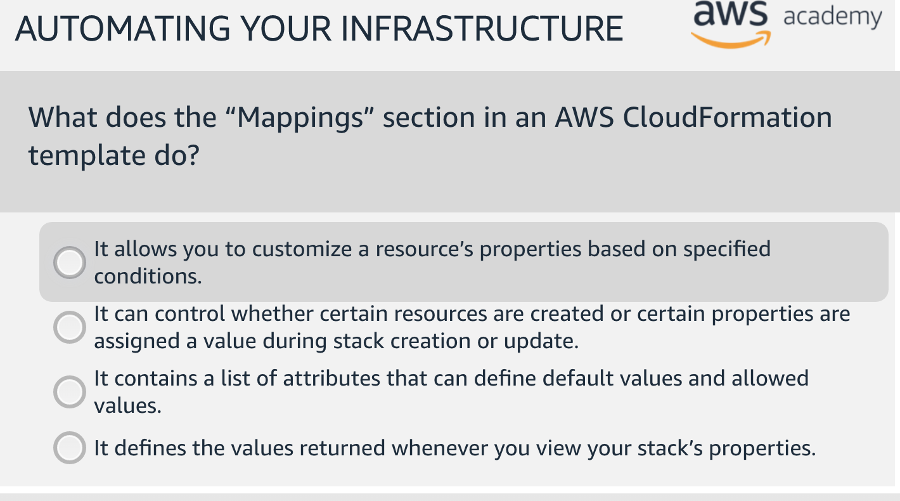
CloudFormation Mappings
The optional Mappings section matches a key to a corresponding set of named values.
For example, if you want to set values based on a region, you can create a mapping that uses the region name as a key and contains the values you want to specify for each specific region. You use the Fn::FindInMap intrinsic function to retrieve values in a map.
You cannot include parameters, pseudo parameters, or intrinsic functions in the Mappings section.
Conditions
The optional Conditions section contains statements that define the circumstances under which entities are created or configured.
For example, you can create a condition and then associate it with a resource or output so that AWS CloudFormation only creates the resource or output if the condition is true.
12
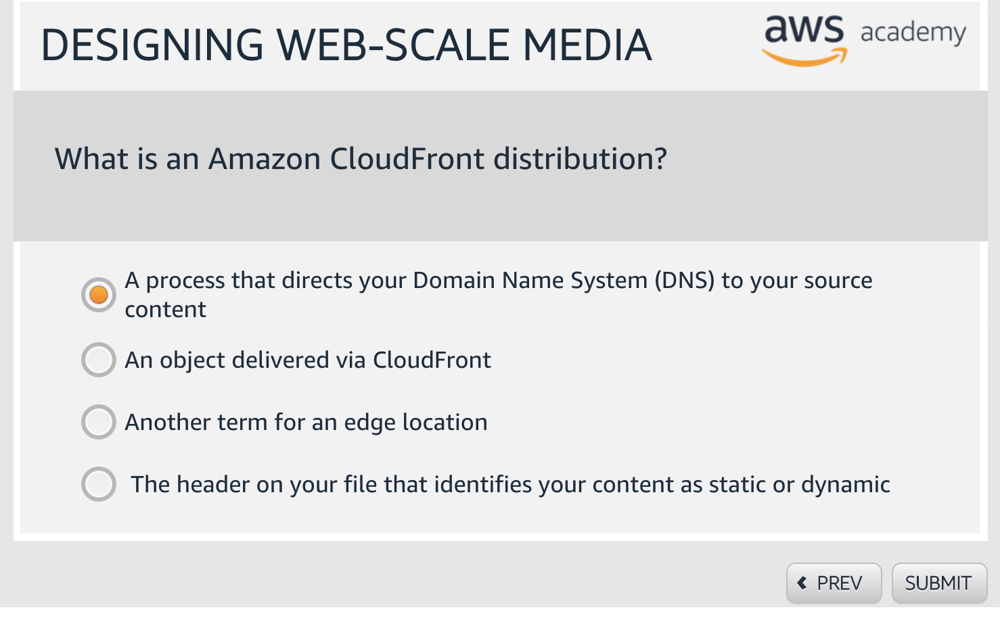
CloudFront distribution
When you create a web distribution, CloudFront assigns a domain name to the distribution, such as d111111abcdef8.cloudfront.net. You can use this domain name in the URLs for your content.
13
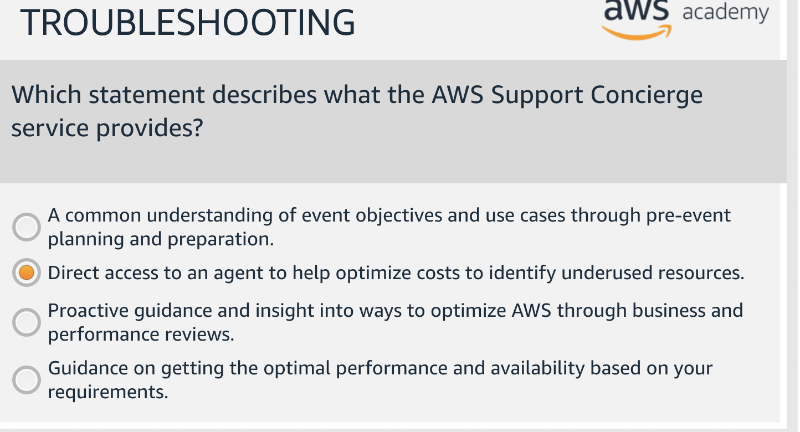
14
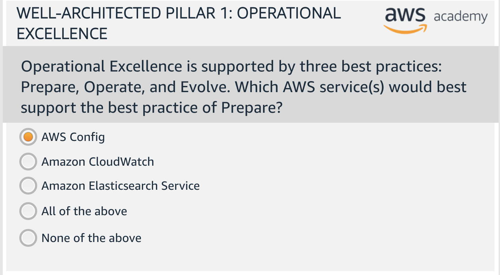
15
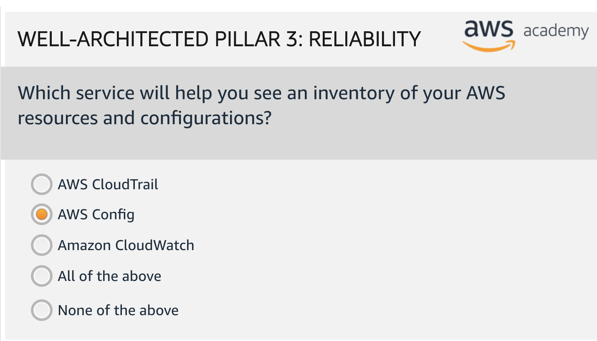
Looking up resources through Config
You can use the AWS Config console, AWS CLI, and AWS Config API to look up the resources that AWS Config has taken an inventory of, or discovered, including deleted resources and resources that AWS Config is not currently recording.
See here
16
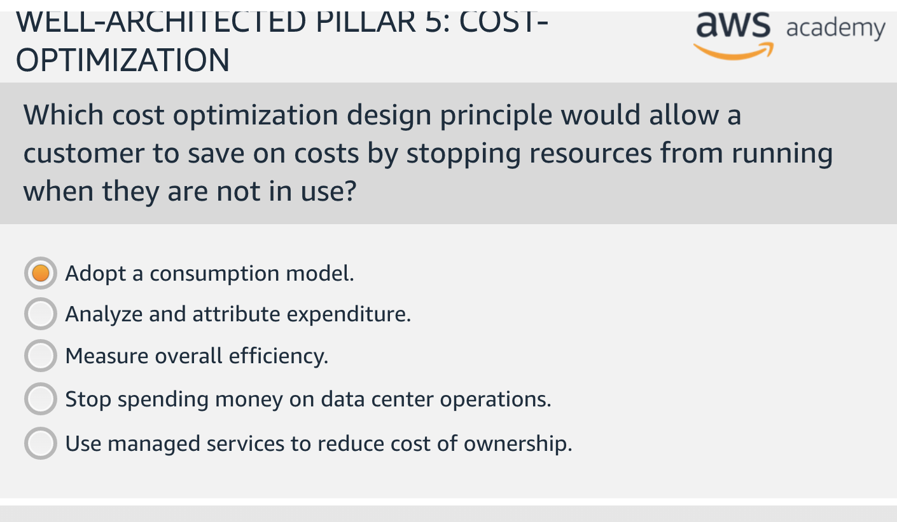
Adopt a consumption model
One of Cost Optimisation Design Principles.
Pay only for the computing resources that you require and increase or decrease usage depending on business requirements, not by using elaborate forecasting.
For example, development and test environments are typically only used for eight hours a day during the work week. You can stop these resources when they are not in use for a potential cost savings of 75% (40 hours versus 168 hours).
17
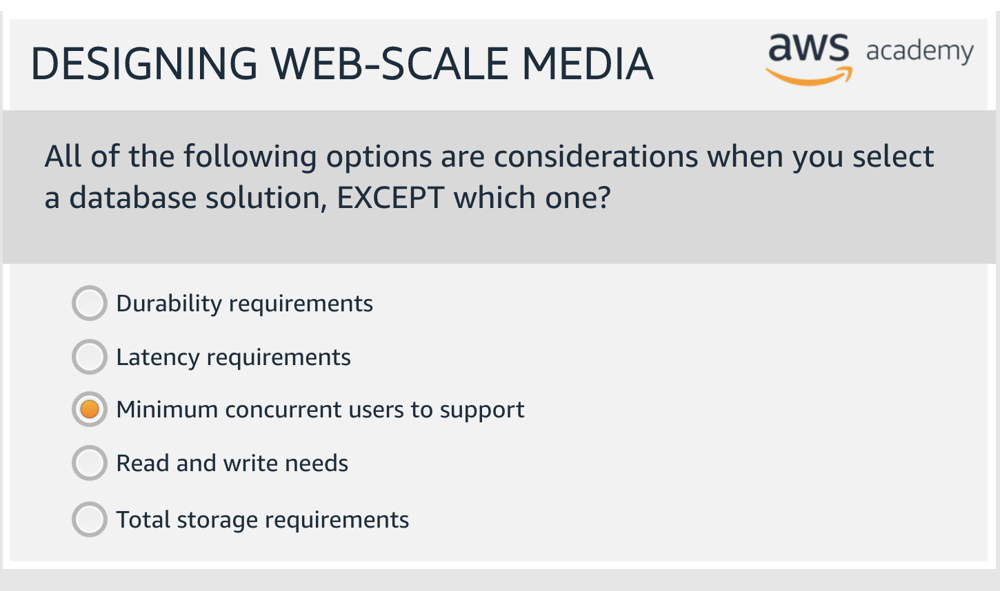
Considerations when selecting a database solution include requirements for availability, consistency, partition tolerance, latency, durability, scalability, and query capability.
18
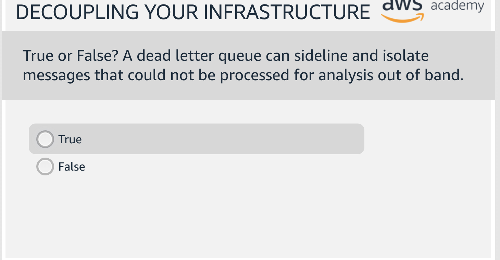
19
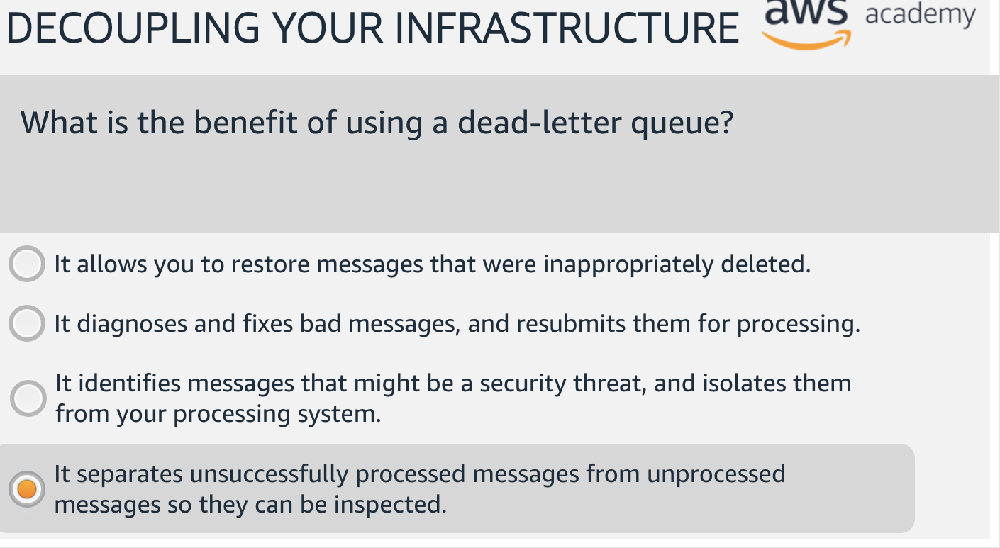
Dead letter queue
Amazon SQS supports dead-letter queue, which other queues (source queues) can target for messages that can’t be processed (consumed) successfully. Dead-letter queues are useful for debugging your application or messaging system because they let you isolate problematic messages to determine why their processing doesn’t succeed.
20
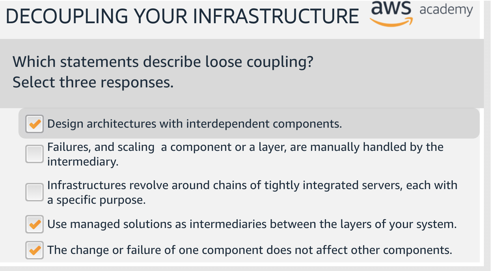